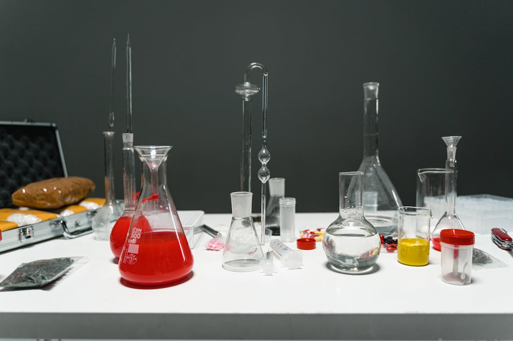

Palvelun esittely
Astioiden tilausportaali on laboratorioille suunniteltu digitaalinen palvelu, jonka avulla laboratorioastiat voidaan tilata, hallita ja seurata keskitetysti yhdessä järjestelmässä.

Palvelu on kehitetty helpottamaan laboratorioiden arkea ja vähentämään manuaalista työtä tilausten käsittelyssä.
Palvelun keskeiset ominaisuudet
- Laboratorioastioiden tilaaminen yhdestä järjestelmästä
- Selkeä näkymä kaikkiin tilauksiin
- Helppo tilausten seuranta
- Vähemmän manuaalista työtä
Miten palvelu auttaa laboratoriotyössä
Tilausportaalin avulla laboratorion työntekijät voivat tehdä tilauksia nopeasti ja seurata tilausten etenemistä. Tämä vähentää virheitä ja säästää aikaa päivittäisessä työssä.